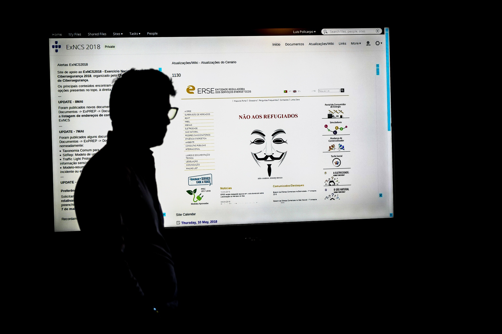
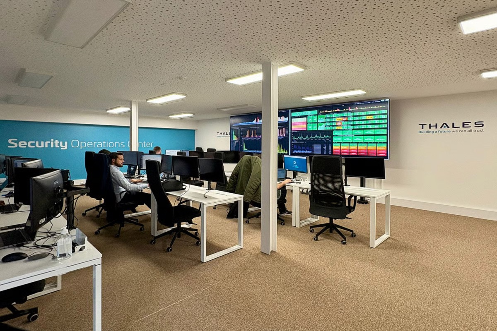
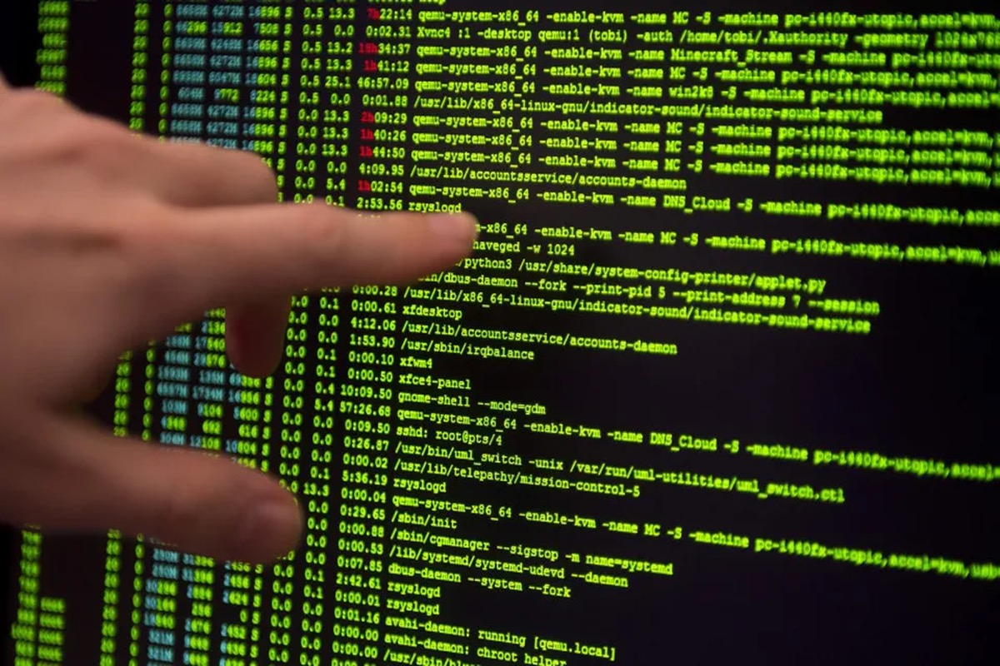
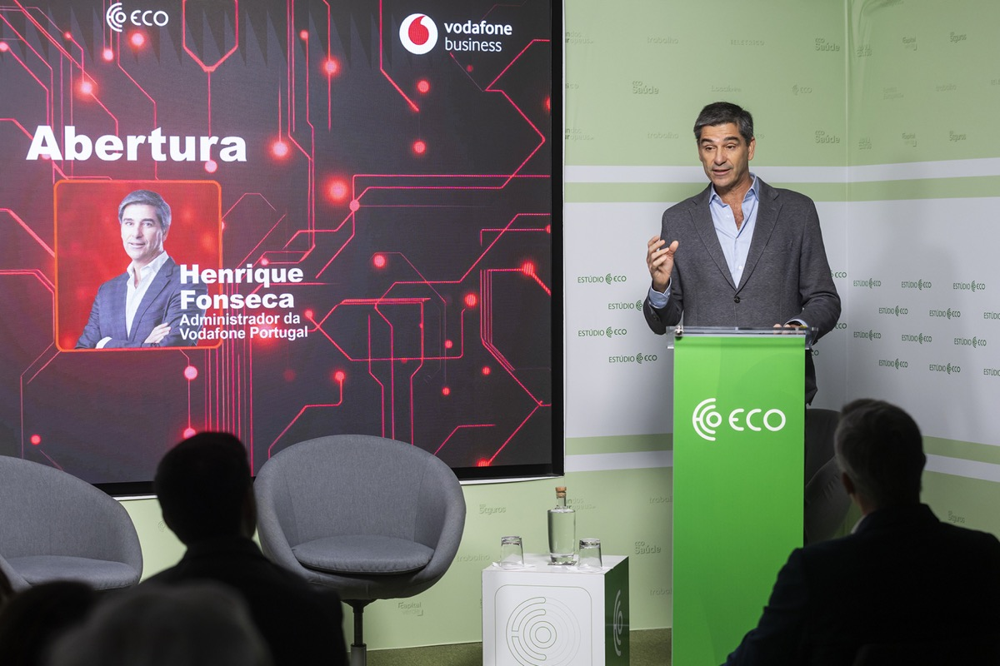

Informação, ataques e tendências digitais

Portugal aprovou um novo enquadramento legal de cibersegurança, alinhado com a Diretiva Europeia NIS2, que reforça a proteção de sistemas digitais e torna obrigatória a adoção de medidas de prevenção e gestão de risco.
Ver maisO ciberataque à operadora Vodafone levado a cabo desde o final da noite de segunda-feira tem provocado várias falhas nos sistemas, afectando serviços como os Bombeiros, a rede Multibanco, o INEM e até alguns hospitais. Já foi iniciado o restabelecimento do serviço 4G.
Ver maisDurante o período entre o final de novembro e 24 de dezembro, quando ocorre o maior volume de compras e transações online da época festiva, cresce também o risco de ataques informáticos e fraudes digitais.
Ver mais
Portugal registou 14 ataques de ransomware no primeiro semestre do ano, um aumento de 250% face ao mesmo período de 2024, segundo o Threat Landscape Report da Thales. A maioria dos incidentes teve como alvo o setor industrial, devido à utilização de sistemas antigos e mais vulneráveis.
Ver mais
Portugal aprovou um novo regime jurídico de cibersegurança que reforça a capacidade do país para prevenir e responder a ataques informáticos. Com o Decreto-Lei n.º 125/2025, Portugal transpõe a Diretiva Europeia NIS2, alargando as obrigações de segurança digital a mais entidades públicas e privadas consideradas críticas.
Ver mais
A entrada em vigor da diretiva NIS2, sobre a cibersegurança, está a transformar a forma como as empresas encaram o risco digital. Na conferência “Futuro Hiper Digital – Ciber-resiliência e Compliance”, organizada pelo ECO com o apoio da Vodafone Business, os peritos deixaram claro que a segurança deixou de ser um tema reservado às equipas de IT e passou a ser matéria de gestão e estratégia.
Ver mais